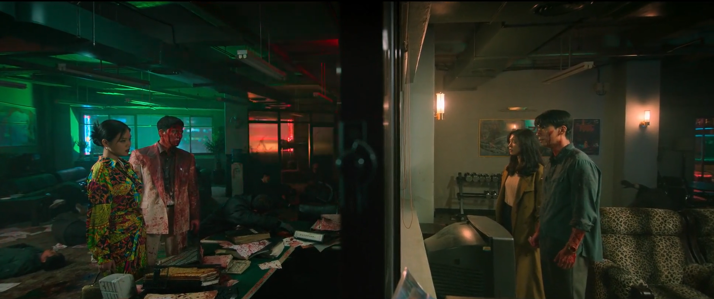

Stap 1

Stap 2/3
Klik hier om stap 2 en 3 te downloaden.Stap 4/5
Who's Worse?
Wie is slechter? Door alleen naar dit plaatje te kijken zouden de meesten het erover eens zijn dat de man aan de linkerkant slechter is dan de man aan de rechterkant. Hij staat in het donker, zit compleet onder het bloed en is omringd door dode mensen. De andere man staat in het licht, heeft bijna geen bloed op zich en de kamer waar hij in staat ziet er netjes en schoon uit. Maar is dit wel het hele verhaal?
Park (links) is een agent op het platteland en krijgt de kans eindelijk carrière te maken als hij de opdracht krijgt om een drugsmaffia organisatie te infiltreren en deze zo onderuit te halen. Hij begint onderaan in de ladder en moet dan alleen kleine taken doen, zoals de straten in de nacht patrouilleren. Als hij het leven van de maffiabaas Jung (links) meerdere keren weet te redden, krijgt hij een steeds hogere positie in de organisatie. Door deze positie moet hij met steeds ergere misdaden meedoen. Althans, zijn eerste moord heeft hij gepleegd om zijn dekmantel te bewaken, als was dit niet met opzet. Park heeft uiteindelijk 1 van de hoogste posities gekregen en kan zo ‘meedoen’ met de drugshandel. Maar zijn missie loopt zodanig uit de hand, dat hij op een gegeven moment mee moet doen met een massamoord als de organisatie wordt aangevallen. De foto is dan ook van de scène waarin hij alle vijanden van de organisatie heeft uitgeschakeld.
Het genre noir komt sterk voor in The Worst of Evil. Een aantal kenmerken van dit genre zijn grimmige lichteffecten, morele corruptie, een cynische held, kiezen van het eigen lot en existentialistische filosofie. Dit laatste staat voor de filosofische stroming die gelooft in de vrijheid en verantwoordelijkheid van een individu om zijn eigen leven vorm te geven. Ook in bovenstaande afbeelding zijn kenmerken te zien. Park, de 'held' in de serie, heeft met opzet een hele groep vermoord. Deze groep was de rivaal van de organisatie waar hij bij hoort en zag hen daardoor in een nog slechter daglicht. Zonder te aarzelen had gekozen om moorden te plegen, dit laat zien dat zijn normen en waarden langzaamaan zijn gecorrumpeerd. Hij gelooft er steeds meer in dat wat hij doet, de enige manier is om het kwaad tegen te houden.
Park wilde goed doen; hij wilde de drugshandel stoppen, daarnaast wilde hij ook carrière maken. Dat hij de handel wil stoppen en eigenlijk van nature een goed persoon is, wordt gesymboliseerd door zijn lichtgekleurde pak. Het bloed en de donkere ruimte waar hij in staat staat symbool voor het feit dat hij nu zelf ook deel uitmaakt van het kwaad. Aan de andere kant staat de maffiabaas. Zijn donkere kleding laat zien dat hij een slecht persoon is, maar zijn omgeving geeft de indruk dat hij zichzelf aan het verbeteren is. De conclusie die ik uit deze scène kan halen is dat Park uiteindelijk slechter is dan Jung; hij was vroeger goed, maar zijn ervaringen hebben het slechte in hem ontwaakt.